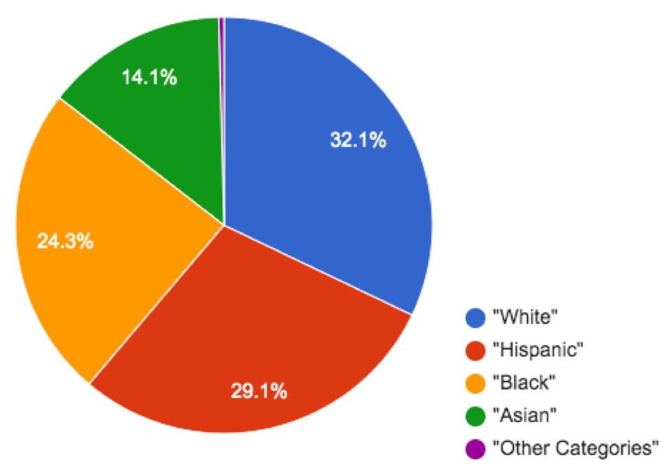
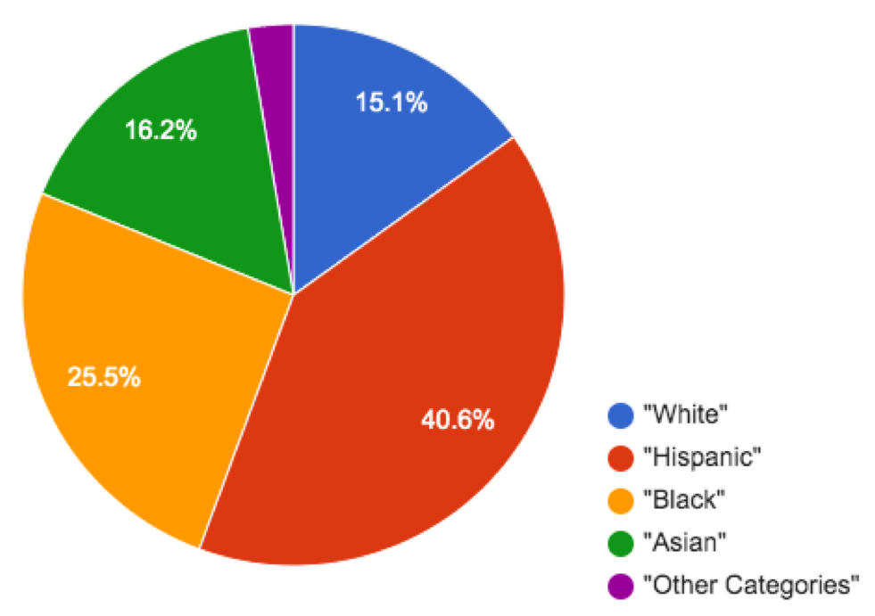
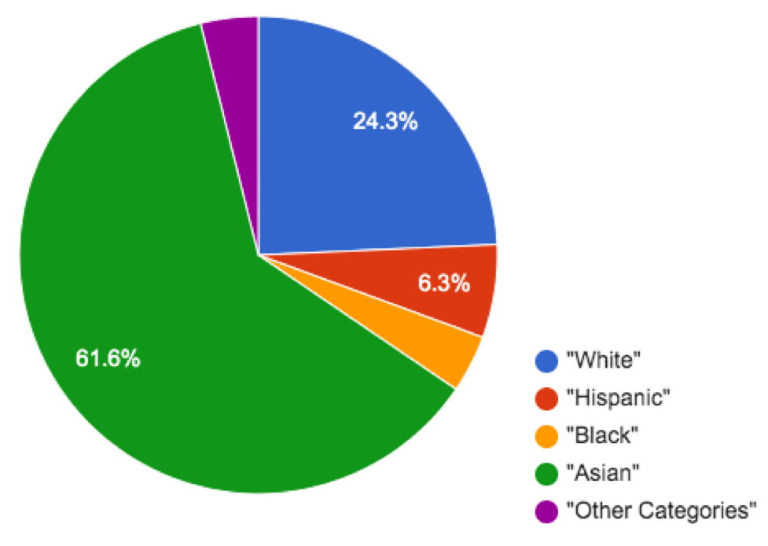

The following data comes from a report from New York City Council, which begins, "After the landmark 1954 Brown v. Board of Education decision, integrating public schools became a nationwide objective." A look at the data led policy makers to pass some new laws. What do you notice and wonder as you look at the pie charts below?
NYC Population 2019 |
NYC Public Schools 2019 |
NYC Specialized High Schools 2019 |
 |
 |
 |
{kind=link}
{kind=link}
{kind=link}
| What do you Notice? | What do you Wonder? |
|---|---|
|
What information can we learn by comparing these pie charts that couldn’t be learned from the schools pie chart alone?
These materials were developed partly through support of the National Science Foundation,
(awards 1042210, 1535276, 1648684, and 1738598).  Bootstrap by the Bootstrap Community is licensed under a Creative Commons 4.0 Unported License. This license does not grant permission to run training or professional development. Offering training or professional development with materials substantially derived from Bootstrap must be approved in writing by a Bootstrap Director. Permissions beyond the scope of this license, such as to run training, may be available by contacting contact@BootstrapWorld.org.
Bootstrap by the Bootstrap Community is licensed under a Creative Commons 4.0 Unported License. This license does not grant permission to run training or professional development. Offering training or professional development with materials substantially derived from Bootstrap must be approved in writing by a Bootstrap Director. Permissions beyond the scope of this license, such as to run training, may be available by contacting contact@BootstrapWorld.org.